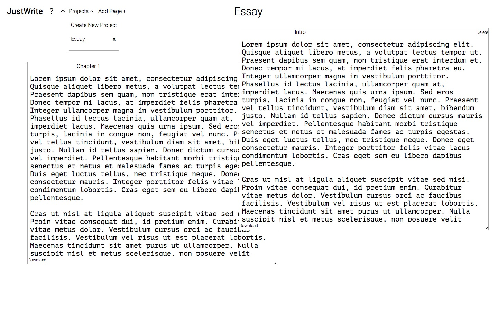

Work
Citi Bike is great, but planning a trip can be frustrating. Peddlr users are able to plan trips by entering the departure and destination locations. The application shows them where the nearest stations are with bikes or stalls available.
- Rails 4
- PostgreSQL
- Citi Bikes API
- Google Maps API
- Geocoder
Valence is a tool for creating, organizing, and visualizing playlists. Using D3, users are able to view dynamic representations of their playlists according to traits like danciness, energy, and acousticness.

- Rails 4
- PostgreSQL
- D3
- EchoNest API
- iTunes API
No formatting. No fonts. No fuss. JustWrite is a pared-down writing tool that eliminates all the distractions of typical writing programs. An invisible autosave mechanism ensures that no work is ever lost.

- BackboneJS
- Rails 4
- PostgreSQL